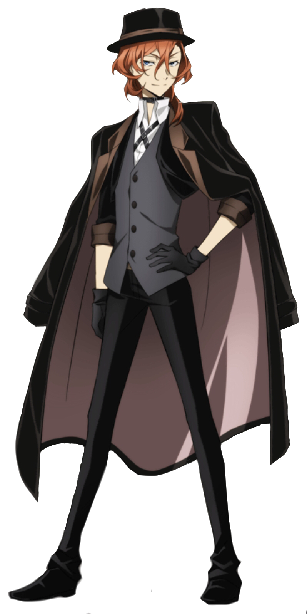
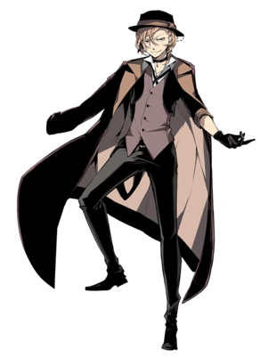
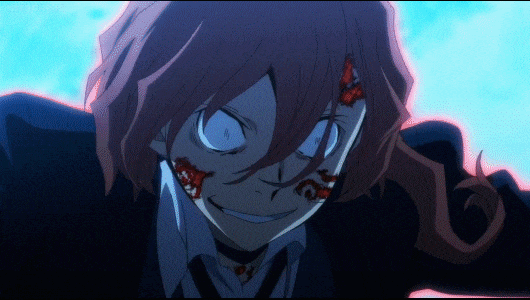
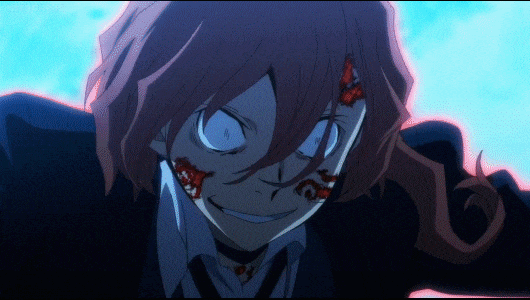
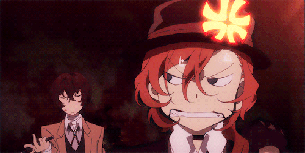
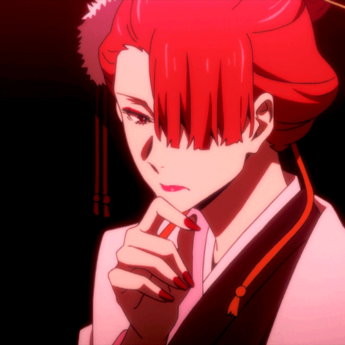
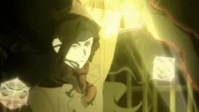

CHUUYA NAKAHARA

Chuuya Nakahara es un miembro activo de la Port Mafia y uno de los 5 ejecutivos de está
Chuuya es un personaje bastante poderoso en todos los aspectos, pero sobresale mayormente en la lucha cuerpo a cuerpo y en el manejo de su habilidad. Es conocido por ser alguien temperamental que nunca rechaza una pelea; aun así, puede se una persona racional siempre y cuando no empujes su paciencia.
El pasado de Chuuya es uno de los más complicados que se pueden encontrar en Bungou Stray Dogs, debido a su gran cantidad de giros inesperados y la cantidad de cosas extrañas que se pueden encontrar; como por ejemplo en la novela "BSD:Fifteen"(temporada 3 del anime), donde se revela que Chuuya es el contenedor de un Dios llamado Arahabaki o como se revela en "BSD: Storm Bringer" Chuuya tiene un hermano al cual no recuerda, además de ser el "prototipo-268" de una investigación militar japonesa.
Antes de ser un miembro de la Port Mafia, Chuuya fue el lider y el poder de una organización llamada "Sheep" , organización la cual lo traicionó para unirse a la GSS.
HABILIDADES
Su habilidad es "Yogorecchimatta Kanashimi ni"(por el dolor corrompido). Esta habilidad le permite alterar la gravedad a su gusto, ya sea sobre objetos o sobre si mismo. Esta habilidad tiene una forma verdadera, la cual le permite manipular los gravitones en su entorno. Al aumentar su propia densidad, es capaz de aplastar un tanque con sus propias manos.
 

RELACIONES
DAZAI OSAMU
Dazai es la persona que Chuuya más odia, debido a que este siempre lo está molestando por su altura o su forma de vestir además de que Dazai tiene lo que Chuuya ve como una personalidad arrogante y tediosa. Fueron puestos en un equipo(conocido como Soukoku o pareja de doble negro) debido a que Dazai era el unico que podia detener el poder de Chuuya si este llegaba a su fase de "corrupción"

KOUYOU OZAKI
Conocida por ser una de los ejecutivos de la Port Mafia. Koyo estuvo encargada de supervisar a Chuuya en su ingreso a la Mafia. Con el pasar del tiempo mientras Chuuya escalaba entre posiciones este se ganó el respeto de Kōyō y varias veces han trabajado juntos para solucionar problemas que involucran al jefe.(como por ejemplo en la temporada 3)

ARTHUR RIMBAUD
Fue un ex-ejecutivo de la port mafia que se dedicó a investigar a Arahabaki y esto lo hizo llegar hasta Chuuya. Chuuya por su parte,logró comprender los motivos de Rimbaud incluso en sus ultimos momentos, por esto, Arthur le dio un somnrero que simbolizaba su entrada a la mafia.
